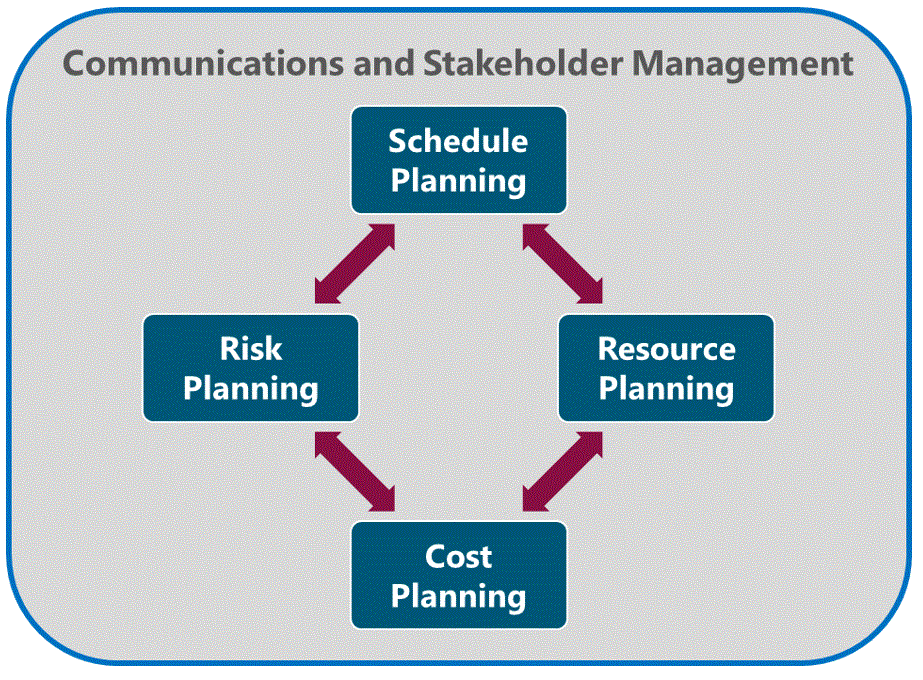
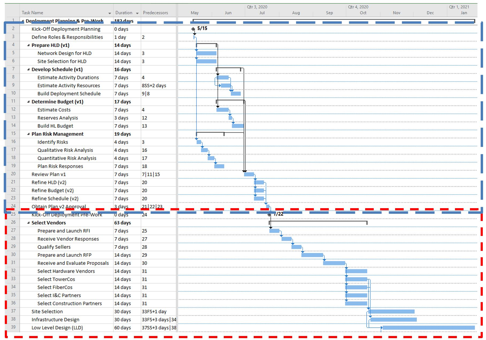
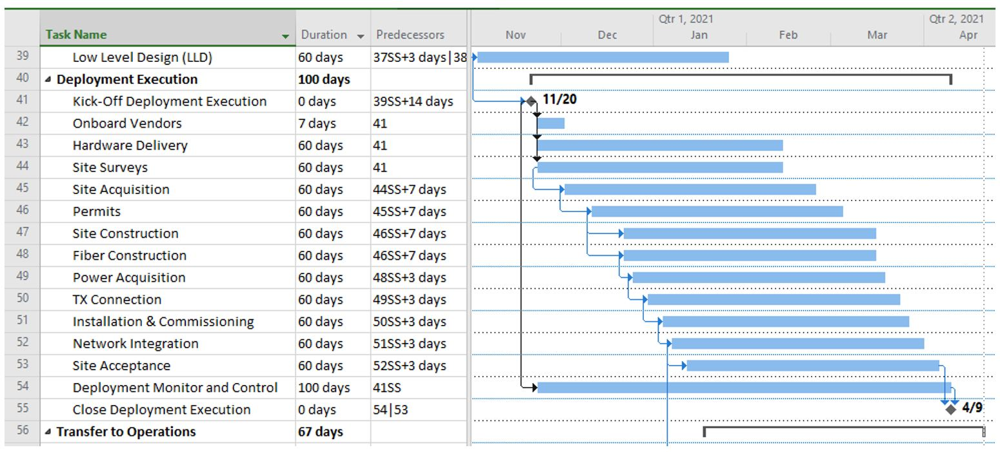
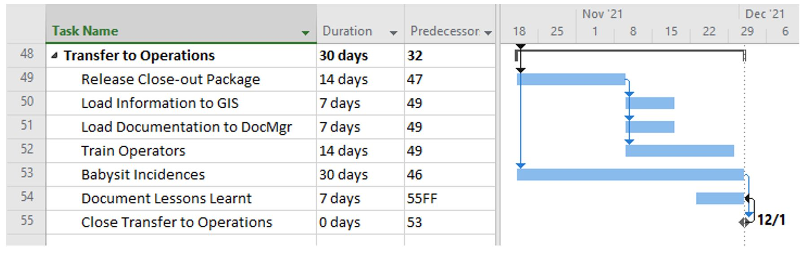
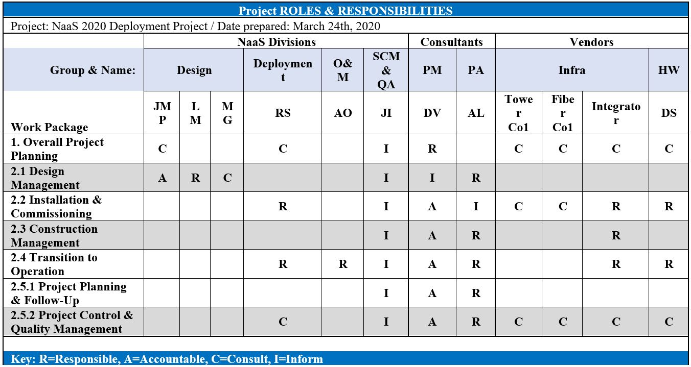
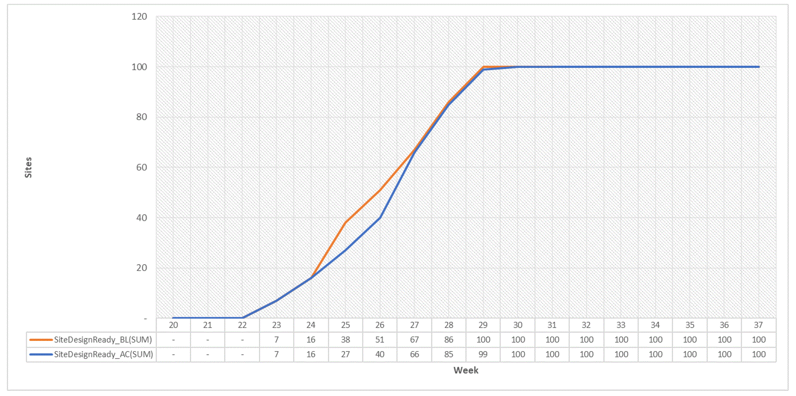
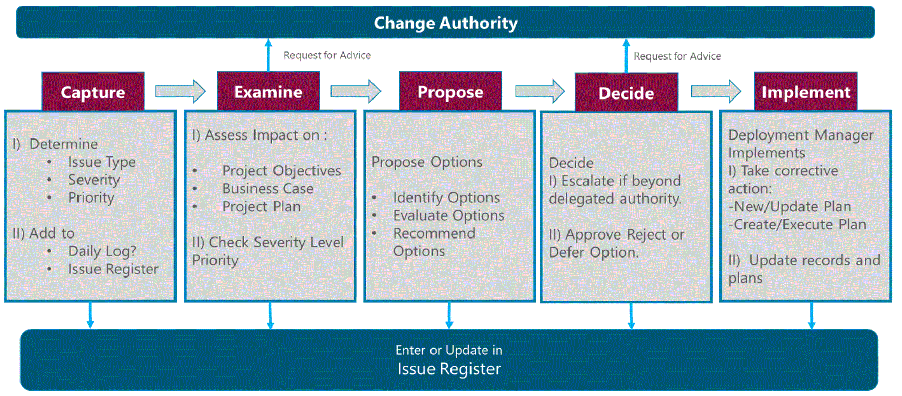
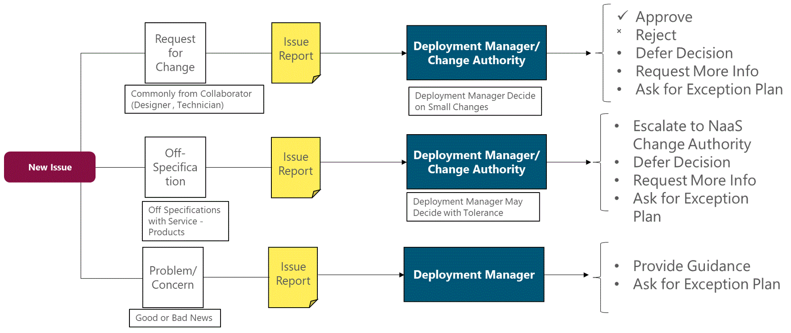
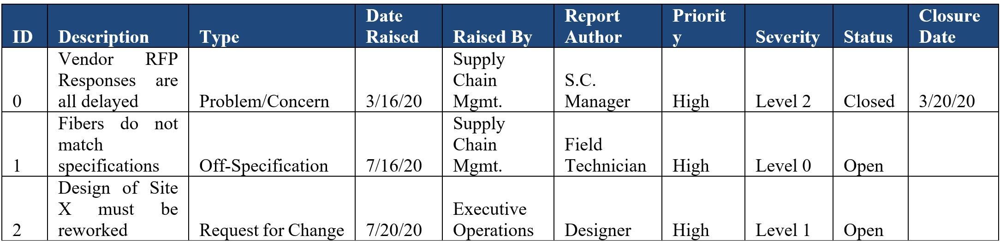

Deployment planning is the
process of establishing the network deployment scope and defining the objectives
and steps to attain them. It is one of the most important processes under
Deployment Management. The output of the deployment planning process is a
comprehensive set of documents that defines the basis of all deployment work
and how the work will be performed.
Deployment Planning can be
examined by dividing it into the following tasks:

Figure 3
Deployment Planning Process
The diagram above shows the
elements within Deployment Planning. First, Schedule Planning establishes the
procedures and methods, to accurately dimension timeframes in all deployment
phases. The outcome is represented in a Gantt Chart showing start and end
dates, as well as dependencies, scheduling and deadlines.
Resource & Cost Planning
helps NaaS operators to accurately estimate the human and financial resources
required to carry out each activity. Afterwards, Risk Planning establishes a
plan to mitigate unwanted issues, from now on called Risks.
As represented in Figure 3,
Deployment Planning can be an iterative process; as an example, if the Naas
Operator wants to deploy all sites in a short period of time, then the required
resources must be calculated accordingly and the budget may be higher than
expected. Then, another iteration can be done to relax timelines and lower costs.
In addition, the Deployment
Manager must ensure clear communications to all stakeholders, defining adequate
communications channels to be exercised during planning and execution.
Scheduling Planning analyzes all
activities, dependencies, and milestones within a project. A schedule also
usually includes the planned start and finish date, establishing the duration
for each activity. Effective schedule planning is a critical component of
successful management.
Its possible to create a Schedule
Plan by listing the process, activities and tasks required to complete the
deployment, as well as the dependencies, sequencing and resources involved. All
deployment tasks can be divided in 3 stages: Planning & Prework, Execution
and Delivery to Operations. Each stage contains part of the tasks described in
Section 2 (Network Design, Site Acquisition, Procurement & Logistics, Construction,
Installation & Commissioning and Transfer to operations). Stages start and
finish with milestones that mark the competition of a major phase.
The following subsection
describes and analyzes the Milestones considered for these 3 stages. Afterwards,
a subsection is dedicated to each stage providing a generic Gantt Chart to perform scheduling and analyze the
tasks.
3.1.1
Deployment Milestones
The deployment of each site
follows a series of tasks starting with network design and culminating with the
site in operations. Here, this is modeled through a generic process. This
process is flexible to be tailored according to the particular NaaS structure,
the network layers involved, which of them are built, which are leased, and the
level of integration with external companies and providers.
To simplify the understanding and
tracking of each sites deployment process, the following milestones have been
considered:
- Site Design Started: This is a
sites initial milestone, when the particular sites characteristics and
site selection have been confirmed (technical and logistical feasibility),
and the network LLD and infrastructure/facility designs have been started.
- Site Design Ready: A given site
reaches this milestone once its LLD is finished, including its Radio
Network Design (RND), and Infrastructure/Facility Design has been
completed, validated and approved. Next stage is to obtain all necessary
permits and prepare all necessary
materials, resources and tools.
- Site Ready for CW (Civil Works). Once
all permits, resources, teams, and tools are ready, the site enters this
milestone. Now it can be visited by the construction teams or contractors
to begin work.
- Site Ready for Power On. After the
site construction or adaptations have been completed, validated and certified
according to quality standards established by the project team, it is
ready for power connection, or adequation of current power supply.
- TX Ready. This milestone is reached
when the transport provider provisions the transport service whether it starts
at the RAN Site or at a transport node, and its connectivity has been
tested and certified.
- Site Ready for
Installation. Once all activities
related to power on, the contract with the main power company is executed,
and all Network equipment is available at the final warehouse. The
installation activities can start.
- Site Ready for Integration. Once
the site is powered on, the TX connectivity is ready, and the equipment
has been installed and configured on-site, the Network Integration can start;
afterwards, the Acceptance Test Protocols are executed as agreed with the
NaaS Operator. If there are any faults detected during this stage, they
must be corrected before qualifying to the next milestone.
- Site on Air. Once the site has been
integrated to the network, and starts driving traffic, it enters this
stage.
- Site Accepted. Milestone reached
after site integration, once all deliverable documentation has been
accepted by the operator, and is now stored in required systems, ready for Handover to Operations.
- Site
in Operations. Final milestone once the Operations group formally
accepts the site and is now under their management.
Deployment Manager must track the
milestones progress with a tool. The tools complexity shall match that of the
project, number of sites, number of regions. The NaaS Operator may use the Deployment Tracking Worksheet to get started.
3.1.2
Planning & Prework stage
Planning involves establishing
the Scope, Resources, Schedule and Cost baselines from which all deployment
work will be sequenced, executed and tracked. Initial planning activities are
carried out from defining roles and responsibilities, to Network design for
HLD, up to the Obtention of the Deployment plan. The PlayBook provides
customizable Gantt Chart templates that can be
adopted by the NaaS Operator for their own deployment project. Below, the Gantt
chart for the Planning & Pre-work stage is presented.

Figure 4.
Gantt Chart for Deployment Planning & Pre-Work
In Figure 4, each row represents
an activity. Then to the right, blue bars represent activity duration, black
brackets represent summary activities, diamonds represent milestones, and
arrows represent relationships. Figure 4 Illustrates the Deployment Planning
(marked in blue) and Pre-work Phase (marked in red), with two internal
iterations for the Project Plan (v1, and v2). It considers activities carried
out in parallel by separate teams. Based on this chart:
- Once the Deployment Plan has been reviewed and approved,
Pre-Work starts by triggering Vendor Selection activities supported by the
Supply Chain Management stream, which involves RFx processes.
- After Infrastructure suppliers are selected, the project
team moves on to complete the Site Selection and Design activities to produce
the first batch of LLDs that will kickstart
the Deployment Execution phase. The NaaS Operator may also trigger hardware
purchase orders to the Selected Hardware Vendors to compensate the production
and shipping delay of equipment.
- The Prepare HLD (v1) activity with ID 4 (predecessor) has
to finish, before the Deployment Schedule and Budget preparation tasks can
start (successors).
- The Schedule, Budget, and Plan Risk Management activities
have all to finish, before the Review Plan v1 activity can start.
- The second iteration of the plan (Obtain Plan v2 Approval)
depends on the three activities dedicated to refine the HLD, the Budget and the
Schedule.
- The Pre-Work tasks are marked by the ID 25 Kick-Off
Deployment Pre-Work milestone, which involve Vendor Selection, detailed Site
Selection, Infrastructure Design and preparation of the first Low Level Designs
(LLDs) to be implemented during the Deployment Execution phase.
Once the Planning stage is
complete, Vendors are selected, and the first batch of Low-Level Designs (LLD)
are ready, the operator may authorize the start of Deployment Execution. The
purpose of the above analysis is to provide the NaaS operator an example of the
Planning & Prework stage; however, duration of each phase depends on NaaS
operator needs. The Gant Chart templates are
provided for the NaaS Operator to customize their own tasks and schedule.
3.1.3
Deployment execution stage
Once the Pre-Work stage is
complete, the NaaS Operator may authorize the start of Deployment Execution.
Below the Gantt Chart for the Deployment Execution phase, showing how the last
activities of the Pre-Work phase (Site Selection, Infrastructure Design, and
LLD) partially overlap with Deployment Execution:

Figure 5. Gantt Chart for Deployment Execution
From the above chart:
- The first tasks in this phase involve onboarding Selected
Vendors into the project, probably by carrying out meetings to establish
communications, reporting structure and performance metrics.
- Then, while Hardware Delivery takes an estimated 60 days, the project team handles Site Surveys (for existing and for greenfield sites),
followed by site acquisition, obtaining
permits, site construction, fiber construction, power acquisition, and TX
connection. This sequence its optimized to minimize delay due to hardware
delivery; however, it may change depending on NaaS operator strategy and
priorities, (e.g. warehousing costs can be avoided if delays are expected in
site acquisition by ordering hardware until site acquisition is complete).
- Then, Installation & Commissioning can only be started
after all site preparations are finished and hardware arrives. In practice, it
may be that when a first batch of sites is ready, a first hardware shipment
arrives and is then installed; while a second batch of sites is prepared and
the project awaits for a second shipment from the vendor.
The Deployment Manager must
adjust the schedule according to the actual team for which the provided Gantt Chart templates can be used to customize its own
schedule considering available resources for planning, volume of work needed to
develop the HLD and LLD, and other external factors such as responses from
pre-selected vendors and initial contact with local authorities for permits and
licenses.
3.1.4
Deployment Closure and Transfer to Operations
After the first batch of sites
has been deployed, and is now providing services to end users, this set enters
the Transfer to Operations phase. During this phase, the main responsibility of
the Deployment Manager is to confirm all work is done according to
requirements, gain final acceptance of sites from the client stakeholder (e.g.
the Operations group), complete final performance reporting, prepare historical
records and gather final lessons learnt and update documentation for future
projects.
Figure 6 shows a generic Gantt
Chart for this phase:

Figure 6.
Gantt Chart for Transfer to Operations
- As seen in Figure 6, only after each site has been
deployed, the Close-Out package may be finished.
- Some training may be in place from the Deployment team to
the operations group if new technologies were implemented. Through this phase,
vendors and part of the deployment team give support to the operations team to
manage incidents and problems through their
learning curve. This depends on the NaaS Operator strategy, support to
the operations team may not be needed.
- Also, the Document Lessons Learnt activity has a
Finish-to-Finish relationship with the Phase closure, meaning the lessons
learnt only finishes when the phase is closed.
As with previous stages, a Gantt Chart Template is provided to the NaaS Operator
for customization according to its own schedule, tasks and Team.
Gantt chart concepts presented in
this and previous sections can be instantiated through Scheduling Tools such as
Microsoft Project or Project Libre, where users can build a new project, add or
remove activities, adjust their relationships, durations, and allocated
resources. These tools allow the Deployment Manager to estimate project
duration by using the Critical Path Method (CPM).
The Deployment Manager should
calculate initial duration estimates to build the Schedule Baseline (Gantt
Chart). Best practices introduce several estimation techniques which are
presented and analyzed in the Primer on Critical Path
Method & Estimation Techniques.
Resource Planning describes the
Human resources required to complete a deployment. To define a comprehensive
Resource Plan, the NaaS operator must identify their required skills, quantify
the amount of resources required for each job and develop a Work schedule for
each resource within the project. The following roles can be considered for the
NaaS Operator Deployment Phases:
Network -RAN/Transport/Core/IP
- RAN Network Design Engineer
- Core Network Design Engineer
- Transport Network Design Engineer
- RAN Integration Engineer
- Core Integration Engineer
Operations -
Deployment/Logistics/Maintenance
- Warehouse Personnel
- Field Technician
- NOC Operator
Financial / Legal -
Leasing/Financing/RFP
- Supply Chain Manager
- Local Attorney
This module assumes that dedicated
resources for Construction activities will be provided by 3rd Party
companies, however this will depend on NaaS operator Strategy.
Please note that the Runbook
provides a customizable Resource Planning Template useful
to Plan Human Resources Schedule, which the NaaS Operator may tailor to fit its
Organizational needs, and schedule.
The following recommendations on
Resource Planning are provided to the NaaS Operator to customize their own
Resource Plan:
- List the required resources:
- Labor: Identify all the
roles required for the Deployment Process, including all full-time,
part-time, and contracting roles under NaaS Operator Organization or
outsourced Personnel.
- Services: 3rd
Party Service Suppliers that provide specific services. Commonly
Construction Companies for Towers or fiber infrastructure construction and
installing.
- Identify the Resource or Company Name and if it
works within the NaaS
Organization or is a 3rd party supplier.
- Identify Timeframes which their task or services are required,
and their availability.
- Identify Assumptions and constraints.
After the Deployment Manager has
come up with a Resource Schedule, accurate estimates can be performed. During
execution, this baseline can only be changed using formal change control procedures
(see Section 4.3) and shall be used as the basis for comparison to actual
results.
3.2.1
Resource Planning Best Practices
Often resources are shared among
several projects or activities in the organization due cost effectiveness.
Because of this, the resources originally considered for activities may not be available,
or their commitment to project activities could be limited.
How the Deployment Manager
manages these situations will be influenced by the overall project priority
among others in the program of the organization. Examples of best practices in
resource management include:
- Regarding shared resources, best practices recommend
looking at resource calendars when available. The Deployment Manager must
approach the resource or their supervisor to negotiate engagement and
commitment to the project. From this, the Deployment Manager may update
activity duration estimates.
- When shared or critically required resources are available
only at certain times or in limited quantities, or are over-allocated, the
Deployment Manager may adjust the start and finish dates of activities.
Cost Planning describes the total
quantity of financial resources required during each Deployment phase. The
total cost of all labor, equipment and materials should be calculated, as well
as the total cost of undertaking each activity within the deployment plan.
Typically, a Deployment Project
spends most of the budget on purchasing, leasing, renting or contracting the
resources for the project (e.g. Network Equipment, Power Equipment, Supporting
Infra, Services, Labor). Categorizing the expenses in this way will help to
easily identify a cost anomaly that affects the planned budget. Cost Breakdown
Structure is used to analyze required Budget and facilitate the Cost Planning
activities. This PlayBook provides a customizable Cost
Breakdown Structure spreadsheet to reflect and analyze costs. For more
information please see the Cost Breakdown Structure
(CBS) Primer.
Depending on the NaaS Operator
budget strategy and Deployment Manager Scope they can either receive a
time-phased budget or elaborate the budget for NaaS operator organization
analysis and approval. Once the Deployment Manager has estimated durations and
costs for every activity and resource, the budget baseline can be built and
either compared to the assigned budget or presented for approval.
A Deployment project needs
excellent communication as a critical component for success. Stakeholder
management is a set of techniques that will ensure the right messages are sent,
received, and understood by the right Stakeholders. It comprises three main
steps:
Identify Stakeholders
The Deployment Manager should
identify stakeholders and their roles within the deployment. Stakeholders are
the employees within the NaaS organization (Internal Stakeholders) or other
collaborators outside the organization such as vendors, contractors, customers,
as they all have interests, roles and responsibilities in the Deployment
project.
Define Roles &
Responsibilities
A key tool to implement
Stakeholder Management throughout the project lifecycle is a Responsibility
Assignment Matrix (RAM), commonly known as RACI chart, as the one shown below:

Table 3.
Project Responsibility Assignment Matrix (RAM) or RACI Chart
From the table above, the roles
are defined as:
- Responsible. The
person performing the work
- Consult. The person
who has information necessary to complete the work
- Accountable. The
person who is answerable to the project manager that the work is done on time,
meets requirements, and is acceptable.
- Inform. This person should
be notified when the work is complete.
With the help of this simple
table, a large part of uncertainty of who is responsible of what will be
avoided. Also, this prevents conflict and potential delays. Every project
stakeholder shall have a clear understanding of what is their expected
contribution levels, deliverables and deadlines.
This RACI
matrix is provided as a template for customization by the NaaS Operator.
Develop Communication Strategy
Once stakeholders have been
identified and their roles and responsibilities has been registered in the RACI
matrix, it is possible to define a communication strategy by performing the
next tasks:
- Identify
a suitable communication channel for stakeholders depending on their
activities, including email, phone, SMS, and other digital messaging platforms
such as Whatsapp, Skype, Slack, Telegram, etc. For example, it might be easier
for a Field Engineer to use WhatsApp instead of emails.
- Identify what information each stakeholder needs to know
about the project. This will help to keep the right focus to the right
stakeholders
- Establish a regular frequency for communication meetings:
setting clear expectations of each event. This enables project members to carve
out space for important meetings and reports ahead of time.
- Define rules for important and asynchronous notifications
and escalations.
To ensure a successful
deployment, a comprehensive analysis and planning for risks must be performed.
Depending on the complexity of the deployment, the number of identified risks
varies. The Deployment Manager can use a Risk Register to manage, control and
create possible solutions. This document identifies all the foreseeable risks
and the actions needed to prevent each risk for occurring
Risk planning is divided in 2
critical steps which are detailed in the following sections:
3.5.1
Identify Risks
It is imperative to identify
Individual Risks, as well as general Project Risks, and document their characteristics.
The Deployment Manager and NaaS operator key personnel may identify them
through workshops that may include some form of brainstorming.
The goal of brainstorming is to
obtain a comprehensive list of individual project risks sources of the overall
project and assign each risk an owner. This means assigning to the right person
that will apply the planned mitigation actions for a particular risk. Then a
Qualitative Risk Analysis should be performed to assign a priority for each
risk.
Each risk is assigned a category
according to its impact and probability, which is then translated into a score
that helps to prioritize the risks; for further additional analysis based on
urgency, priority, impact. A generic matrix for priority scoring is shown below:
|
Probability
|
|
|
|
|
|
|
|
0.1
|
|
|
|
|
|
|
|
0.3
|
|
|
|
|
|
|
|
0.5
|
|
|
|
|
|
|
|
0.7
|
|
|
|
|
|
|
|
0.9
|
|
|
|
|
|
|
|
|
0.1
|
0.3
|
0.5
|
0.7
|
0.9
|
Impact
|
|
|
|
|
|
|
|
|
Table 4. Risk
Priority Scoring Table
In addition, a quantitative risk
analysis may be performed. For more information please refer to the Primer on Risk Analysis Techniques.
3.5.2
Plan Risk Responses
Once risks have been identified,
and analyzed, plans should be developed by the nominated risk owner or the
Deployment Manager to address every individual project risk. The NaaS Operator
should also consider how to respond appropriately to the current level of
overall project risk.
There are five alternative
strategies to deal with risks:
- Escalate. Appropriate
when the Deployment Manager agrees that a threat is outside the scope of the
project, or that the proposed response would exceed the Deployment managers
authority.
- Avoid. Is when the
NaaS Operator acts to eliminate the threat or protect the project from its
impact. It may be appropriate for high-priority threats with a high probability
of occurrence and a large negative impact. Examples of avoidance include
removing the cause of a threat, extending the schedule, changing the project
strategy, or reducing scope.
- Transfer. Involves
shifting ownership of a threat to a third party to manage the risk and to bear
the impact if the threat occurs. Transfer can be achieved through the use of
insurance, performance bonds, warranties, guarantees.
- Mitigate. In this
case, action is taken to reduce the probability of occurrence and/or impact of
a threat. Adopting less-complex processes, conducting more tests, or choosing a
more stable seller are examples of mitigation actions.
- Accept. Risk
acceptance acknowledges the existence of a threat, but no proactive action is
taken. This strategy may be appropriate for low-priority threats, and It may
also be adopted where it is not possible or cost-effective to address a threat
in any other way
As a result of identifying risks
and planning responses, the team will generate a Risk Register, which is the
document that captures all the details of the identified risks, individual and
general to the project. A Risk Register Template
aligned with the NaaS deployment scenario is shown in the following table, the
NaaS operator may use it as a baseline and tailor it to its own deployment
scenario by adding any other detected risks:
|
ID
|
Cause
|
Event
|
Effect
|
Prob.
|
Priority
|
EVM (USD)
|
Strategy and Response Plan
|
Risk Owner
|
|
01
|
If
the Target Coverage is changed
|
The
Site List will change
|
Rework
will be necessary
|
0.1
|
Medium
|
/
|
Ensure Coverage Area and Service
Requirements Change is managed and signed by client.
|
R.R.
|
|
02
|
If
the radio hardware delivered doesnt perform as advertised
|
Radio
Performance will be lower
|
Configuration
change or Hardware Change
|
0.1
|
Low
|
/
|
Ensure adequate testing and homologation
procedures are followed
|
J.M.P.
|
|
03
|
If
installation teams lack the necessary skills and training
|
Installation
will take longer or give way for more accidents or damages
|
Delivery
delays, fines, lawsuits
|
0.3
|
Medium
|
/
|
Ensure adequate training and certification
for all personnel assigned to the project
|
R.S.
|
|
04
|
If
the Operator loses the Deployment Permit
|
The
Deployment may be halted or cancelled
|
Financial
Loss, Loss of Revenue
|
0.5
|
High
|
100 M
|
Secure Permit, and adhere to all
regulation
|
R.R.
|
|
05
|
If
engineers in the Design Team are unavailable
|
HLD
and LLD sections will not be worked on
|
Project
Delays
|
0.7
|
High
|
/
|
Synchronize with the Engineering
Department on 06Resource Availab07ility, Resource Cal08endars, update
Sched090ule if needed
|
M.G.
|
|
06
|
If
actual costs are much higher than established margin off estimated costs
|
Budget
will not be enough to cover the Scope
|
Activities
in the critical path may take longer, quality may need to be reduced, or
Scope reduced
|
0.5
|
High
|
75 M
|
Obtain
enough references for the 20% of concepts that count for 80% of the budget
(Pareto Law).
Carry
out more testing, and widen Vendor Selection to foster competition.
Practice Sole Source and Single Vendor
avoidance.
|
A.U.
|
|
07
|
If
key resources dedicated to critical path activities become unavailable
(illness, resignation)
|
Activities
progress will stop while a replacement is found
|
Project
Delays, Cost increased, Quality Reduced
|
0.1
|
Medium
|
/
|
Establish Knowledge Transfer mechanisms,
Handover process, and back-up team members
|
M.G.
|
|
08
|
If
the organization suffers a cyberattack
|
Project
Data is lost completely
|
Project
activities must stop until systems and data can be rebuilt
|
0.1
|
Medium
|
10 M
|
Follow IT Best Practices, Periodic
Backups, promote Information Security regulations throughout the team and
external stakeholders
|
J.G.
|
|
09
|
If
a supplier goes out of business
|
Activities
related to the supplier stop, procurements with supplier are stopped, budget
spent at stake
|
Project
Delays, financial loss, quality reduced
|
0.1
|
Medium
|
/
|
Establish sound Vendor Selection
Criteria (e.g. Financial History, ongoing lawsuits, production capacity), and
qualify alternative sellers ready to cover supply for emergencies.
|
A.U.
|
|
10
|
If
the project or organization acquire civil responsibility for an accident
|
Activities
related to the accident must stop, government may revoke the license to
operate
|
Massive
financial loss, delay, liability
|
0.1
|
Medium
|
80 M
|
Establish mechanisms in contracts to
isolate company from damage caused by third parties, and buy insurance
policies.
|
Y.G.
|
|
11
|
If
any financial resource is stolen by any stakeholder
|
Activities
related to that resource wont be completed
|
Financial
Loss, Activity Delays
|
0.3
|
Low
|
100 k
|
Establish strong mechanisms for Budget
Management, avoid cash transactions when possible
|
S.R.
|
|
12
|
If
any tool or instrument is required but not available
|
Activities
related to this resource cant start, unless resource is acquired
|
Activity
Delays, Cost increase
|
0.3
|
Medium
|
/
|
Strengthen Resource Requirements
planning, determine the need to buy or rent each tool or instrument
|
R.S.
|
|
13
|
If
any hardware element of sites is vandalized or stolen
|
Activities
related to unfinished sites must stop until hardware is replaced; or finished
sites become out of service
|
Activity
Delays, Cost Increase
|
0.3
|
Medium
|
8 M
|
Evaluate
mechanisms or anti-vandalism add-ons for high-priority sites (stronger locks,
perimeters, alarms, cameras).
Consider insurance policies.
|
R.S.
|
|
14
|
If
site survey reveals a selected site lacks space, energy or transport
capabilities
|
Site
cannot be built, installed or deployed
|
Activity
Delays, Cost Increase, Quality reduced
|
0.1
|
Low
|
/
|
Accept. Evaluate second
alternatives for each site, consider more than one transport solution per
site, and off-grid energy options
|
X.H.
|
|
15
|
If
power is unstable on-site for construction, installation or commissioning
work
|
Site
cannot be deployed reliably, resulting in additional site visits
|
Activity
Delays, Cost Increase, Quality Reduced
|
0.9
|
High
|
/
|
Mitigate. Evaluate usage of
portable power generators for installation and construction work; and
evaluate the need for higher availability and capacity Backup Power for key
sites.
|
J.V.
|
Table 5.
Generic Risk Register for the NaaS scenario
The Deployment Control and
Monitoring starts as soon as a project begins. It is the process of tracking, reviewing,
and regulating the progress in order to meet the deployment objectives.
Moreover, this process is majorly concerned with:
- Measuring the actual performance against the planned
baselines.
- Assessing performance to determine whether any corrective
or preventive actions are triggered, the status is reported and/or appropriate
risk response plans are being executed.
- Maintaining an accurate, timely information base concerned
with the project output and its associated documentation till project
completion.
- Providing information to support status reporting, progress
measurement and forecasting
- Monitoring implementation of approved changes as they
occur.
Control and Monitoring Deployment
Phase is where the Deployment Manager role has the highest impact. He must
measure actual performance against the performance baselines, to determine if
variances warrant preventative actions, corrective actions or other change
requests.
Control and Monitoring are
essential for effective network deployment, from Network Design to a successful
transfer to operations. The Deployment Manager should track all the tasks
involved using methodologies and strategies that are already defined and
planned before the execution.
In order to monitor work, the
Deployment Manager shall lead the project team to gather Work Performance Data,
such as reports, KPIs, and statistics often processed and summarized by a Deployment Management Tool. The following sections
provide guidance to track specific tasks throughout the deployment process.
Useful methods to analyze and track deployment performance are described in the
Primer on Deployment Performance.
4.1.1
Tracking Design Tasks
Design for the NaaS scenario
should be tracked at the site level. To this end, the Design Team should feed
progress data into a shared tool or template which the Deployment Manager can
monitor for current progress and deviations from the planned work. What has
been found to be the most effective information to capture is the Date of completion
for each major step in the design process.
This way, the Deployment Manager
can obtain KPIs regarding efficiency and throughput of the Design Team. The
PlayBook provides templates that the NaaS operator can use to record KPIs described
in this section, please refer to the Deployment
Tracking Worksheet.
Specially during Network Design,
it is essential to track the generation of Low-Level Design (LLDs) and
establish agreement with the Design team on delivery dates for batches of sites,
that allow to kickstart deployment execution of the first sites.
Recommended KPIs to measure
progress of Design tasks include:
- Total Sites. Not
exactly a KPI, but a base figure from which many activities Duration will be
estimated.
- Average Design Time per site (hrs). Design module processes estimate how long it takes for an LLD to go
through the process implemented by the Design Module. This way, the Deployment
Manager has a sense if the Design team is
working at the expected rate, any deviations, which will allow the Deployment
team to adjust Execution forecasts accordingly.
- LLD Rework Rate (%). For
cases where the LLD has to be revised due to changes in TowerCo, transmission
solution, or particular site configuration, this is considered a rework event.
The ratio of additional Design iterations over the total number of sites is the
Rework Rate (e.g., 0% means zero rework, 50% means half of the sites needed
rework).
Together, the Average Design
Time per site (hrs) and the LLD Rework Rate (%) allow for a
reasonable estimation of time for the design phase of the complete set of
sites.
4.1.2
Tracking Deployment Execution Tasks
Now that partners are carrying
out site surveys, building sites and towers, connecting power, raising and
installing radio equipment, building fiber, commissioning and integrating
equipment, the Deployment Manager has the responsibility for tracking how work
is advancing with respect to the baselines. This tracking determines whether
there are deviations, forecast updated deadlines and the need for preventive or
corrective action.
In terms of Network Deployment,
the Deployment Manager could track the volume of sites acquired, built, or
integrated up to the current day, and how much was planned to be achieved by
then; and also, how much has it cost so far.
To do this, a Deployment Tracking Worksheet is provided to the NaaS
Operator for customization.
After extensive experience in
Deployment projects, it has been found that storing the date for each milestone
is enough to track each deployment step, because it allows to understand delays
and advancement of steps at the site level, at the same time allowing for Data
Analysis and Visualization.
Below is a sample of the
Deployment Tracking Spreadsheet:
|
SiteID
|
Region
|
District
|
SiteConfig
|
TowerCo
|
TowerID
|
SiteDesignReady_BL
|
SiteDesignReady_AC
|
|
AA00219
|
North
|
MTY
|
MACRO
|
SuperTowers
|
ST0014
|
6/1/2020
|
6/5/2020
|
|
AA00951
|
North
|
ZAC
|
MINI
|
PremiumTowers
|
PT001211
|
6/1/2020
|
6/2/2020
|
|
ED00640
|
Center
|
GTO
|
SMALL
|
NaaS Owned
|
T00001
|
6/1/2020
|
6/4/2020
|
|
FE00941
|
Center
|
QRO
|
MACRO
|
NaaS Owned
|
T00013
|
6/1/2020
|
6/4/2020
|
|
VC00029
|
South
|
VER
|
MINI
|
NeatTowers
|
NT0041
|
6/1/2020
|
6/2/2020
|
|
CH00128
|
South
|
CHI
|
SMALL
|
NeatTowers
|
NT0111
|
6/1/2020
|
6/3/2020
|
|
CA00135
|
North
|
MTY
|
MACRO
|
SuperTowers
|
ST0524
|
6/1/2020
|
6/4/2020
|
|
CA00216
|
North
|
ZAC
|
MINI
|
PremiumTowers
|
PT044331
|
6/8/2020
|
6/11/2020
|
|
CA00162
|
Center
|
GTO
|
SMALL
|
NaaS Owned
|
T01110
|
6/8/2020
|
6/12/2020
|
|
CA00257
|
Center
|
QRO
|
MACRO
|
NaaS Owned
|
T00054
|
6/8/2020
|
6/10/2020
|
|
CA00391
|
South
|
VER
|
MINI
|
SuperTowers
|
ST0756
|
6/8/2020
|
6/13/2020
|
|
CA00130
|
South
|
CHI
|
SMALL
|
PremiumTowers
|
PT00984
|
6/8/2020
|
6/11/2020
|
|
CA00149
|
North
|
MTY
|
MACRO
|
NaaS Owned
|
T00612
|
6/8/2020
|
6/9/2020
|
|
CA00199
|
North
|
ZAC
|
MINI
|
NaaS Owned
|
T00803
|
6/8/2020
|
6/9/2020
|
|
CA00260
|
Center
|
GTO
|
SMALL
|
NeatTowers
|
NT00454
|
6/8/2020
|
6/12/2020
|
|
CA00261
|
Center
|
QRO
|
MACRO
|
SuperTowers
|
ST3123
|
6/8/2020
|
6/11/2020
|
|
CA00262
|
South
|
VER
|
MINI
|
PremiumTowers
|
PT99231
|
6/15/2020
|
6/16/2020
|
Table 7.
Sample Deployment Tracking Spreadsheet
From the above:
- SiteID: Unique identifier for site
- Region/District:
Geolocation data (could add columns for latitude, longitude)
- Site Config:
Differentiation among site types
- TowerCo: Assigned
infrastructure leasing company, or NaaS owned
- TowerID: Assigned
leased tower, or NaaS owned tower
- SiteDesignReady_BL:
Planned date for the site to reach the Site Design Ready milestone. BL =
Baseline
- SiteDesignReady_AC:
Actual date when the site reached this milestone. This allows to
estimate deviations, KPIs and end up as Data point for the Dashboard.
During planning, the team records
the planned dates in the columns with the BL (baseline) identifier. Then,
during execution the same team records the actual dates in columns with the
AD identifier. Further Milestones become recorded in the remaining columns to
the right, as shown below:
|
SiteID
|
SiteDesignReady_BL
|
SiteDesignReady_AD
|
ReadyForCW_BL
|
ReadyForCW_AD
|
|
AA00219
|
6/1/2020
|
6/5/2020
|
6/13/2020
|
6/14/2020
|
|
AA00951
|
6/1/2020
|
6/2/2020
|
6/13/2020
|
6/16/2020
|
|
ED00640
|
6/1/2020
|
6/4/2020
|
6/13/2020
|
6/17/2020
|
|
FE00941
|
6/1/2020
|
6/4/2020
|
6/13/2020
|
6/17/2020
|
|
VC00029
|
6/1/2020
|
6/2/2020
|
6/13/2020
|
6/17/2020
|
|
CH00128
|
6/1/2020
|
6/3/2020
|
6/13/2020
|
6/17/2020
|
|
CA00135
|
6/1/2020
|
6/4/2020
|
6/13/2020
|
6/17/2020
|
|
CA00216
|
6/8/2020
|
6/11/2020
|
6/20/2020
|
6/22/2020
|
|
CA00162
|
6/8/2020
|
6/12/2020
|
6/20/2020
|
6/22/2020
|
|
CA00257
|
6/8/2020
|
6/10/2020
|
6/20/2020
|
6/24/2020
|
|
CA00391
|
6/8/2020
|
6/13/2020
|
6/20/2020
|
6/22/2020
|
|
CA00130
|
6/8/2020
|
6/11/2020
|
6/20/2020
|
6/25/2020
|
|
CA00149
|
6/8/2020
|
6/9/2020
|
6/20/2020
|
6/21/2020
|
|
CA00199
|
6/8/2020
|
6/9/2020
|
6/20/2020
|
6/24/2020
|
|
CA00260
|
6/8/2020
|
6/12/2020
|
6/20/2020
|
6/21/2020
|
Table 8.
Sample Deployment Tracking Spreadsheet (continued)
Once the baseline dates are
established for each site, they are shown on a week-by-week basis. A fragment
of the summary sheet is shown below:
|
Deployment Tracking Summary
|
|
|
|
|
|
Year
|
Week
|
StartDate
|
EndDate
|
SiteDesignReady
_BL
|
SiteDesignReady
_BL(SUM)
|
SiteDesignReady
_AD
|
SiteDesignReady
_AD(SUM)
|
|
2020
|
22
|
5/25/2020
|
5/31/2020
|
-
|
-
|
-
|
-
|
|
2020
|
23
|
6/1/2020
|
6/7/2020
|
7
|
7
|
7
|
7
|
|
2020
|
24
|
6/8/2020
|
6/14/2020
|
9
|
16
|
9
|
16
|
|
2020
|
25
|
6/15/2020
|
6/21/2020
|
22
|
38
|
11
|
27
|
|
2020
|
26
|
6/22/2020
|
6/28/2020
|
13
|
51
|
13
|
40
|
|
2020
|
27
|
6/29/2020
|
7/5/2020
|
16
|
67
|
26
|
66
|
|
2020
|
28
|
7/6/2020
|
7/12/2020
|
19
|
86
|
19
|
85
|
|
2020
|
29
|
7/13/2020
|
7/19/2020
|
14
|
100
|
14
|
99
|
|
2020
|
30
|
7/20/2020
|
7/26/2020
|
-
|
100
|
1
|
100
|
|
2020
|
31
|
7/27/2020
|
8/2/2020
|
-
|
100
|
-
|
100
|
|
2020
|
32
|
8/3/2020
|
8/9/2020
|
-
|
100
|
-
|
100
|
Table 9.
Deployment Tracking Summary sheet
From the above table:
- Milestones tracking is summarized by year and week (Start
Date, End Date)
- In each column the sheet adds the number of sites that were
planned to reach that milestone that week
(baseline); then on the contiguous column, adds up the accumulated for that
milestone.
- The same is done for that same milestone, but for actual
dates recorded during Execution (increments, and accumulates).
The PlayBook provides the NaaS
operator useful customizable templates to create their own charts depending on
the deployment needs, please refer to the Site Tracking Sheet included in the Deployment Tracking Worksheet.
In order to illustrate and
compare the performance of the project with respect to the baseline, it's
possible to show the Actual Schedule graphic and the Baseline Schedule graphic,
for each milestone. Below, is the SiteDesignReady Baseline Chart vs an Actual
Simulation:

Figure 12.
Baseline vs Actual for the Site Design Ready Milestone chart
From the above chart, from week
23 to week 24, the actual performance matched that of the baseline. Then, on
week 25 the performance suffered, delivering only 27 designs of the 38 planned.
The performance lagged during week 26, but at week 27 the gap was almost
eliminated. By week 28 and 29, the difference was compensated, and the project
work recovered soon enough.
Some of the recommended KPIs to
track during Deployment Execution include:
- % sites on-time
- % sites behind schedule
- % Overall Progress
Also, for a finer understanding
of the work dynamic among Deployment Milestones, its possible calculate the
Minimum, Maximum, and Average of:
- Time from Site Design Ready to Site Ready for CW. Time spent in the Site Survey if it has not yet been
carried out, plus last details of Site Acquisition.
- Time from Ready for CW to Ready for Power-On. Time spent in civil works (construction) measured in days.
- Time from Ready for Power-On to TX Ready. Time allocated for the Mains Power company to connect power
to the site, or for an energy partner to implement an off-grid power solution.
- Time from TX Ready to Site Ready for Installation. Time estimated for a TX service provider to integrate the
selected transport solution (e.g. fiber, xDSL, microwave).
- Time from Site Ready for Installation to Ready for
Integration. Time allocated for equipment
installation and basic commissioning.
- Time from Ready for Integration to Site on Air. Time spent in integrating the site to the network.
- Time from Site on Air to Site Accepted. Time spent for acceptance (technical report delivery,
review and approval) and potential closure of punch-list.
Please refer to Deployment KPIs within Deployment
Tracking Worksheet to find a useful spreadsheet that NaaS operator use
to track deployment.
4.1.3
Tracking Transfer to Operations Tasks
Tracking Transfer to operation
Process is needed to track the adequate progress of the site reception by
operations. Smooth transition allows the release Deployment Execution resources
to handle the next batch of sites for integration.
After integration, Transfer to
Operations includes a period of Incidences Babysitting. The Deployment Manager
should be aware of the total number of incidents during the babysitting
process, and the time it took to resolve them. Unless these are within
acceptable levels, it could be an evidence of faulty delivery, or further
training needs for the Operations group.
Once the site has been accepted
by Operations, the Deployment Manager also must gather the lessons learned, and
release the resources no longer needed for the project.
The closure of the deployment
project involves closing work packages, making sure invoices have been managed,
and payments to suppliers sent by Supply Chain Management.
The recommended KPIs to track
Transfer to Operations include:
- % Sites Delivered on Time
- % Sites Accepted on Time
- % Sites Delivered behind schedule
- % Sites Accepted with Delays
- % Accuracy for Schedule Baseline. Degree at which the Schedule Baseline (Gantt Chart) was
close to actual Schedule.
- % Accuracy for Cost Baseline. Degree at which the Cost Baseline (and Budget) was close to
actual costs.
- Time from Site Accepted to Site in Operations. Time dedicated to transfer the integrated site to operations,
with the associated documentation.
- E2E Time from Site Design Ready to Site in Operations. Total time dedicated for the deployment of that single
site.
- Critical/Major/Minor Incidences. Accumulated incidences throughout the Babysitting period
Please refer to Deployment KPIs within Deployment
Tracking Worksheet where NaaS Operator can find the functional
spreadsheet for use during the Transfer to Operations phase.
By accurately tracking
deployment processes, the Deployment Manager
is better equipped to detect deviations or anomalies that may be related to
previously identified risks during planning, or risks that hadnt been unveiled
during the planning phases.
Risk Management is an on-going
activity for the Deployment Manager, consisting of the following tasks which
are performed taking the Risk Register developed during planning as a starting
point:
4.2.1
Track Identified Risks
The Deployment Manager can use
the Risk Register provided to track the overall
risks. As the deployment progresses, risks change: probability, impact,
priority and even response plans may change.
Thus, the Deployment managers
must work with the risk owners to update trigger conditions and the related
metrics in the Risk Register.
4.2.2
Identify and Analyze New Risks
The Deployment Manager
periodically works with key stakeholders and risk owners to identify new risks.
What is new? What has changed? What has been overlooked?
In particular, the following
aspects shall be considered to identify new risks:
- Major changes to the project or its environment
- Key milestones reached
- Unexpected risks
- Changes in key team members or stakeholders
4.2.3
Manage Risk Response Plans
For each risk or set of risks, a
response has been planned. As detailed in section 3.5, Risk owners are responsible
to execute the plans. The Deployment Manager must ensure that Response Plans
are triggered and implemented at the most appropriate time.
The Deployment Manager continues
to work with the risk owners to evaluate the effectiveness of the responses
throughout the Deployment Process. Responses are modified as needed and updated
in the Risk Register.
NaaS Operator must understand Change
within the context of Deployment Management as anything that transforms or
impacts projects, tasks, processes, structures, or even job functions.
Therefore, Change Management is
critical to effectively adapt the plans, tasks and outcomes of the deployment
process. The Deployment Manager must manage change in an effective way to
minimize the impact or leverage the change and maintain consistency across the
NaaS organization
A communication strategy is the
key to achieve a successful implementation of change. As soon as it is detected
that a change will be required, a communication channel must be opened between
the Deployment Manager and the affected stakeholders. This section analyzes
techniques to document, examine, decide, communicate, and implement changes
that will help NaaS operator take effective actions over unplanned issues.
4.3.1
Change Control Procedure
Change Control is about dealing
with issues, which could be requests for change, off-specification and
concerns/problems (other).
To manage change, every Change
Request (and its related impact on Schedule/Cost/Quality/Scope) shall be
reviewed and approved by an appointed Change Authority. Only approved changes
may be implemented. The Change Authority is a person or group who considers
requests for change and off-specifications. Commonly is the responsibility of
the Deployment Manager but it can also be the Executive Team, Board of
Directors, a Change Committee or a specific member of the NaaS Organization.
For a better understanding this
section analyze a common change that may happen in RAN LLD.
Change Example: A Change in RAN LLD
In this hypothetical scenario the NaaS
Operator share the same tower and masts with another operator. Even when site
survey indicates that there is enough space in mast to install the antenna, the
Installation Engineer notice that required Azimuth mismatch with space
availability. There are 5 steps to help Deployment manager handle unexpected
Issues and Changes: Capture, Examine, Propose, Decide, and Implement.
- Capture: Determine
type of issue. As indicate in 4.3.2 Dealing with Project Issues
In
the example the issue is a Request of change the Azimuth must be changed to one
that fits space limitations. The Deployment Manager record this
new Issue as Request Change in the Issue Register and in the Design Tracker as
a new Iteration including the Change Description.
- Examine: Assess the
impact of the issue on the project objectives. Priority determines the urgency to implement the change. The Deployment
Manager can prioritize issues asking the following questions:
- Must have: Will the implementation fail if not resolved?
- Should have: Does it affect the Deployment Operations? How?
- Could have: Deployment operations will improve? How?
In
the example is a Must Have, the Azimuth must be adapted to space limitations.
- Propose: Propose
actions to take:
- Identify the options: Change solves the issue?
- Evaluate: At what Cost? Worth the effort?
- Recommend.
In
the example one of the proposals may be an LLD redesign that includes an
Azimuth shift in the other sectors in order to avoid an overlap.
- Decide: The Deployment
Manager or Change Authority decides whether to approve, reject the recommended
solution.
- Severity Normal > Deployment Manager.
- Severity Significant > Change Authority.
- Severity Major > NaaS Organization Directors.
In
the example it is assumed that the Designer is available at the time, there are
no other installation task that depend on the antenna installation; thus, the
original schedule is not affected and the change in the cost plan is within the
contingency reserve. The Deployment Manager can authorize the required change.
- Implement: Put the
recommended solution in action (taking corrective action).
- Inform the decision, expected actions,
deadlines, expected results, and impact to the affected stakeholders in a
clear, orderly and effective manner. Please see section 4.3.3 Change Management
Best Practices.
- Depending on impact, the Deployment
Manager must update the plan (Schedule, Cost, Resource, Risks)
In
the Example the Deployment Manager must inform Designer of the redesign
requirements clearly with all the new updates of the site. Field Technician
must be informed to postpone antenna installation work until the redesign is
ready and continue with missing tasks. The Deployment Manager records the Issue
closure date in the Issue Register once is solved.
Figure 13 is a graphical representation of the Issue and
change Control Procedure

Figure 13
Issue and Change Control Procedure
4.3.2
Dealing with Project Issues
Issue is a relevant event that
has happened and that requires some management action (for example, a question
or a Change Request). Issues can be raised at any time during the project and
by anyone. Identified risks that are materialized, or the response to those
risks when implemented, can be considered issues under the change management
context.
There are 3 types of Issues:
Request for Change: It is
a proposal for a change to a baselined Design, Schedule, Specification, Work
Guideline that has already been approved. i.e. This could be a design change,
Installation methods of procedures updates.
Off-Specification: This is
something that was agreed to be done but is not provided by the supplier and/or
not forecast to be provided, and therefore, is out of specification or
off-specification.
Problem/Concern: which
could also be a question (positive or negative): Any other issue that the
Deployment Manager needs to resolve or escalate; this could be positive or
negative.

Figure 14 Dealing with Deployment Issues
As shown in Figure 14, the
Deployment Manager and Change authority deal with changes depending on which
kind of issue is facing, the strategy also considers the impact of the issue
that will decide if the Deployment manager can manage the issue by himself or
escalate it to the Change Authority. Below there are some examples of dealing
with issues in change management:
- Request for Change - A
Change Request form (Issue Report with status Change Request) will be filled in
(description, priority, costs, options, recommended options, etc.). The Change
Authority will decide on the change.
- Off-Specification -
Issue Report will be filled in detailing the off-specification. The Change
Authority will decide on how to deal with this off-specification.
- Problem/Concern (Other)
- These are other issues, which can of course be positive or negative. The
Deployment Manager can handle these issues if within their tolerance or ask for
guidance if they bring the stage out of tolerance.
Once the process is defined, the
Deployment Manager decides which tools he will use to manage that change
control process. Many teams turn to simple issue register spreadsheets to list
change requests and track progress. Typically, there are several data points to
manage within a change control process:
- Description of change request.
- Type
- Who requests the change?
- Priority of item.
- Assignee in charge of implementing change.
- Date change was implemented.
- Notes.
Table 13 is a Sample of the
Spreadsheet described above:

Table 13
Sample of Issue Register
4.3.3
Change Management Best Practices
The absence of proper
communication for a change process may turn into a failed implementation of the
required change. Overcommunication or no communication are both undesirable as
due to this the whole effort of change can be derailed. If communication is
made efficiently and clearly, it will help in building awareness and in getting
the subsequent support in the entire deployment.
Below are some items that the Deployment Manager should
consider as best practices:
- Communicate consistently, frequently, and through multiple
channels about the change.
- Communicate all that is known about the changes, as quickly
as the information is available.
- Provide significant amounts of time for people to ask
questions, request clarification, and provide input.
- Communicate the reasons for the changes in such a way that
people understand the context, the purpose, and the need.
- Publicly review the measurements that are in place to chart
progress in the change management and change efforts.